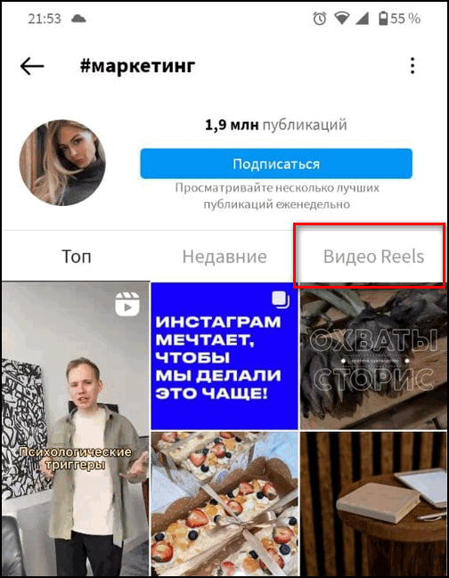
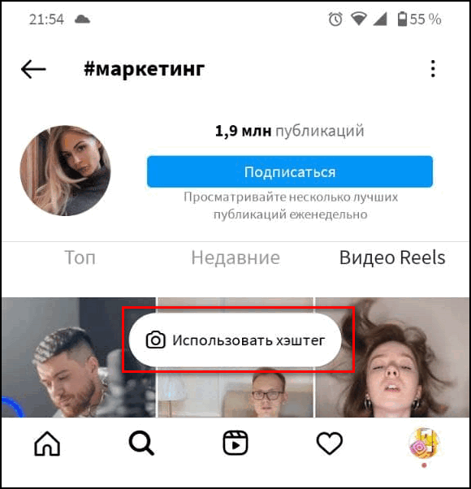
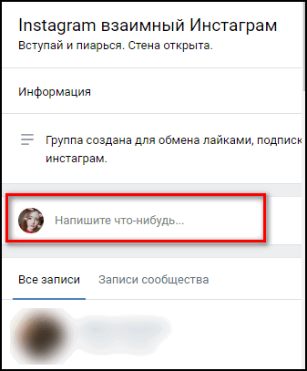
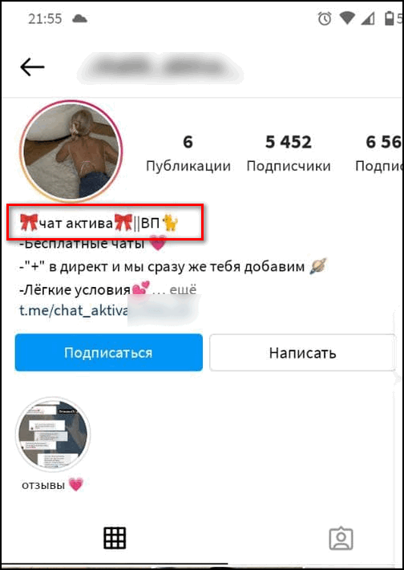
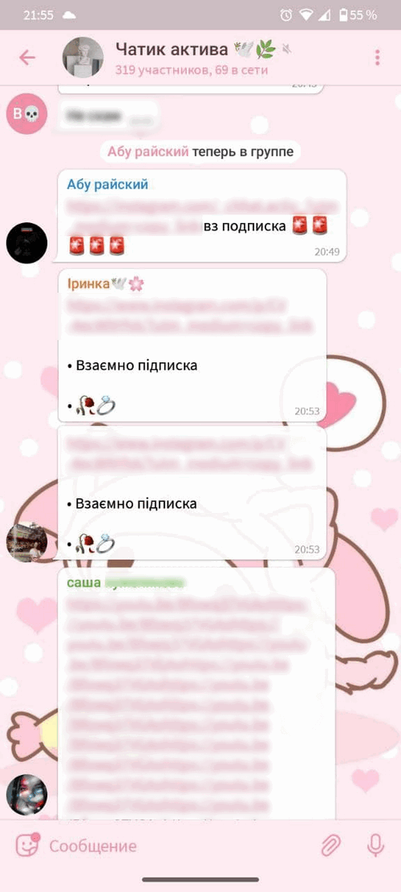
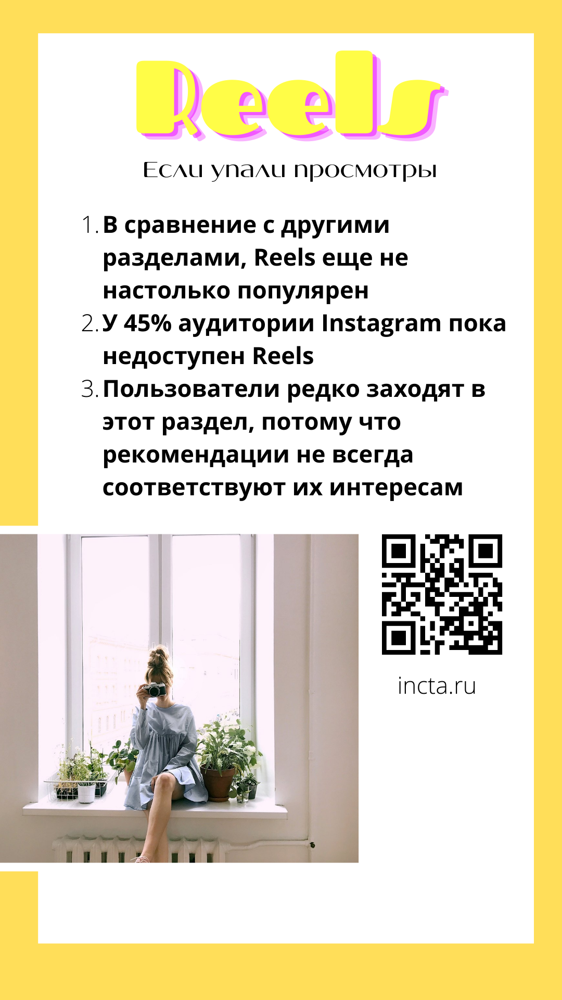
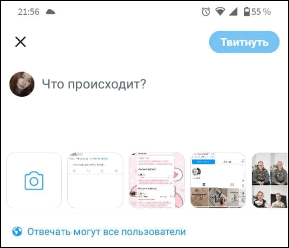
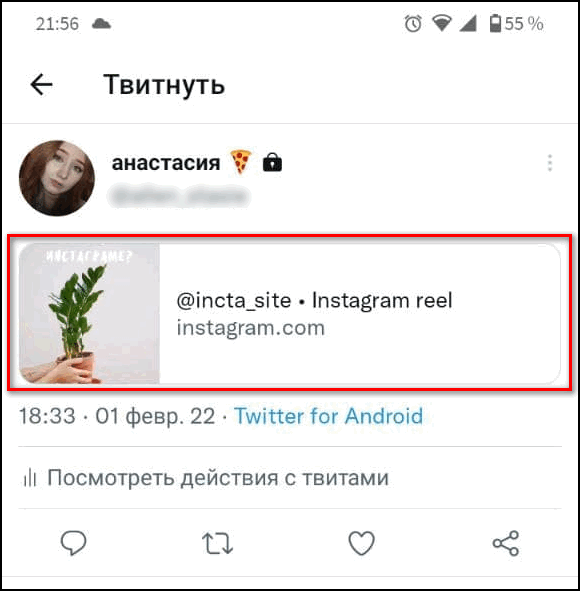

Как увеличить просмотры своих Рилс в Инстаграме

Увеличить просмотры Рилс в Инстагрме* можно за счет регулярного общения с подписчиками, поиска актуальных тем и улучшения контента. Не секрет, что в социальной сети особое преимущество у видео, которые размещены на страницах «настоящих людей»: на видео есть лицо или человек полностью.
Как поднять просмотры своих Reels в Инстаграме*
Набрать просмотры, в отличие от других платформ с такой же функцией, в Инстаграме* непросто. Дело в том, что в социальной сети контент в Рилс подобран с учетом подписок владельца профиля. И рекомендации по интересам появляются редко. Поэтому потенциальные зрители могут не увидеть контент или пропустить его среди остальных записей. Как набрать просмотры:
- воспользоваться тематическими хештегами. Те, которые отвечают основной идее страницы;
- чаты активности. Эффективный способ, но влияет на дальнейшее продвижение аккаунта;
- распространение своего контента в других социальных сетях;
- платное продвижение всего профиля;
- поиск популярных тем;
- создание коротких и смешных видеоклипов с музыкой из ТОПа.
В основном, контент из Рилс переносят в Тик Ток или ВК, где есть похожие разделы для просмотры клипов. В указанных социальных сетях просмотры набираются быстрее, поэтому сделав обратную ссылку на Инстаграм*, можно получить подписчиков с другой платформы.
Таблица эффективных онлайн-сервисов
| Название: | Цена за 100 шт./рубли: | Гарантия: |
| SMM-bloger.ru | От 5 до 25 | Есть гарантия |
| Smmplace.ru. | От 15 до 35 | На тариф: «Премиум» |
| TapLike | 150 | есть |
| @otec_smm_bot. | От 150 до 300 | Нет |
| @TOPnakrutok_bot | От 17 до 130 | На тарифы «Быстрый старт», «Офферы» |
| PrSkill | От 16 | Нет |
| SMMPrime | От 17 | нет |
| TMSmm | От 29 до 39 | «Весь мир» |
| SMMRoot | От 17 до 16 | нет |
| TaskPay | От 15 рублей | нет |
| LikeMania | От 18 рублей до 240 (за подписку) | да |
| Piar4You | 19 | Нет |
| PRMotion | До 36,33 | «Стабильные», «Элита» |
| SMMTrand | От 17,5 до 25,4 | «Супербыстрые» и «с охватом» |
| SocFame | От 16 до 100 | «Просмотры с посещение профиля» |
| BestLike | От 16 до 36 | «Премиум» |
| HypeReels | От 50 | нет |
| Boosted | От 17 до 32,13 | «Премиум», «Просмотры+охват» |
| Nakrytka | От 20 | «Живые профили» |
| SMMYT | От 37 до 126 | На тарифы «Премиум» и «Ультима» |
Используем хештеги для продвижения
Если на видео 0 просмотров, то есть вероятность, что дело в некачественной съемки, неверно подобранной тематике или в отсутствии динамики. Reels – это короткие видео, в которых пользователь должен успеть показать основную идею. Как подобрать хештеги для продвижения Рилс в Инстаграме*:
- Выбрать стандартные теги для своего профиля.

- Перейти по меткам, чтобы посмотреть примеры у конкурентов.
- Посмотреть Рилс, которые были записаны конкурентами.

- Выбрать подходящий формат – собрать наиболее популярные хештеги, которые используют на чужих аккаунтах.
То есть, если автор соберет список из 10 тегов, которые чаще всего встречаются у конкурентов – он сможет таким же способом продвигать контент в своем профиле.
Тематические сообщества
Группы для продвижения всегда были популярны относительно социальных сетей и распространения контента. Автор блога может добавить ссылку на свой профиль или отдельное видео, чтобы получить подписчиков. Группы в Вконтакте:
- Взаимный Инстаграм*. Можно оставить ссылку на свою страницу или Рилс;
- Пиар и Взаимный лайки. Открыта стена, где пользователи обмениваются своими ссылками на контент, аккаунты.
Как воспользоваться группами в ВК, чтобы распространить свой контент:
- Зайти в социальную сеть – выбрать сообщество, где пользователь планирует поделиться постом.
- Скопировать ссылку в Инстаграме* – перейти в сообщество.

- Вставить ссылку и подождать, пока на контент обратят внимание другие пользователи.
Но в случае с таким продвижением, вероятность повышения числа подписчиков – минимальна. Это касается и накрутки просмотров для Рилс, которые могут остаться без внимания у новых зрителей.
Чаты активности
Чат-активности – один из вариантов, как продвигаться в социальной сети и сделать видео популярными среди широкой публики.
Недостаток такого способа в том, что по завершению продвижения с помощью чата, в аккаунте падает охват, есть вероятность теневой блокировки.
Как воспользоваться чатом активности для продвижения Reels:
- Зайти в социальную сеть – скопировать ссылку на видео.

- Вписать в поиске: «Чат-активности» – найти подходящий вариант по хештегам.
- Присоединиться к чату – отправить ссылку на клип.

Или, можно поискать чаты-активности а Телеграме, ВКонтакте. Там также указывают ссылку на публикацию и можно отслеживать количество просмотров. Это временная активность, которая может повлиять на дальнейшее развитие аккаунта. Если пользователь постоянно обращается в чаты-активности или накручивает подписчиков – его профиль могут навсегда заблокировать за применение автоматизированных средств продвижения.

Другие социальные сети
Если у владельца блога есть страницы на других платформах – он может сделать рекламу своего Рилс там. Это касается профиля в ВК, Тик Токе или Твиттера. Во всех указанных социальных платформах есть вариант добавить короткий клип и отслеживать количество посмотревших. Рассказать о своем клипе с помощью Твиттера:
- Зайти в мобильное приложение социальной сети.
- В Инстаграме* выбрать запись с Reels из Ленты.

- Нажать сверху три точки – Скопировать ссылку.
- Перейти в Твиттер – создать новую публикацию.

- Добавить ссылку – отправить.
В Ленте появится миниатюра с ссылкой, с помощью которой посетители профиля смогут перейти к оригинальному посту. Также, владелец профиля может подключить аккаунт Твиттера к своей учетной записи в Инстаграме*, чтобы постоянно пересылать контент.
Что делать если просмотры упали в Рилс
Повысить просмотры Рилс можно вышеуказанными способами, но если посещения неуклонно снижаются, то это может быть:
- на видео редко присутствуют люди. В соответствии с последними правилами, только личный и оригинальный контент чаще продвигается в социальной сети. По этой причине, среди рекомендуемых записей реже встречаются клипы с предметами, реклама интернет-магазинов;
- неверно подобрана тема. Автор сухо подает информацию, если его блог направлен на развлекательный контент или наоборот;
- низкое качество. Устаревшая камера, подобраны старые треки;
- отсутствует связь с аудиторией. Владелец страницы не отвечает на вопросы пользователей.
Даже в случае, если у пользователя магазин/шоурум, нужно размещать контент где присутствуют люди. Это могут быть видеоотзывы, записи с созданием продуктов или подготовка материалов. Легкая форма, шутки в донесении информации помогают продвигать даже аккаунты экспертов.
Для записи новых клипов нужно посмотреть последние тренды и выбрать, какой формат записи подойдет. Например, в Рилс можно встретить даже слайд-шоу (подборка изображений под музыку), но с оригинальным оформлением.
Что делать если видео набирает 0 просмотров
Такое количество просмотров возможно на небольших или только развивающихся блогах. Первое время, пока на странице до 100 публикаций и менее 1000 подписчиков – считается нормальным. Популярными становятся темы, направленные на уже готовую целевую аудиторию. Поэтому, чтобы собирать больше просмотров, пользователю нужно:
- выделить свою целевую аудиторию;
- определить темы, которые могут вызвать отклик у подписчиков;
- следить за трендами и новыми идеями в обработке.
К примеру, если добавить к видеозаписи нестандартные переходы, то она может быстрее собрать просмотры. Популярными становятся Reels, которые связаны с: нестандартные идеи и распаковка товаров, разоблачения (от блогеров до товаров с интернет-магазинов), остро-социальные ролики.
Что влияет на просмотры Рилс в Инстаграме*
Ноль просмотров в Инстаграме* для крупного блога – показатель, что неверно подобраны способы продвижения. Возможно, автор только накручивал подписчиков или же собирал с помощью чата активности. Это отличается от временного применения тем, что кроме чатов и накрутки не использованы другие варианты.
- автор редко добавляет новые клипы. Нужно регулярно заполнять раздел, чтобы подписчики обратили внимание;
- использует неправильные хештеги или вовсе без них;
- однотипность. Снимая видео только в одной локации, с одним и тем же инвентарем.
- вести блог в одном стиле. Фотографии должны совпадать с видеозаписями;
- следить за иностранными блогами. Многие тренды приходят именно из зарубежного сообщества;
- обращать внимание на конкурентов;
- применять разные идеи.
Для личных блогов, страниц экспертов – свою историю успеха или любое другое мотивационное видео. Популярными станут смешные и забавные клипы, где использована какая-либо шутка для подписчиков.